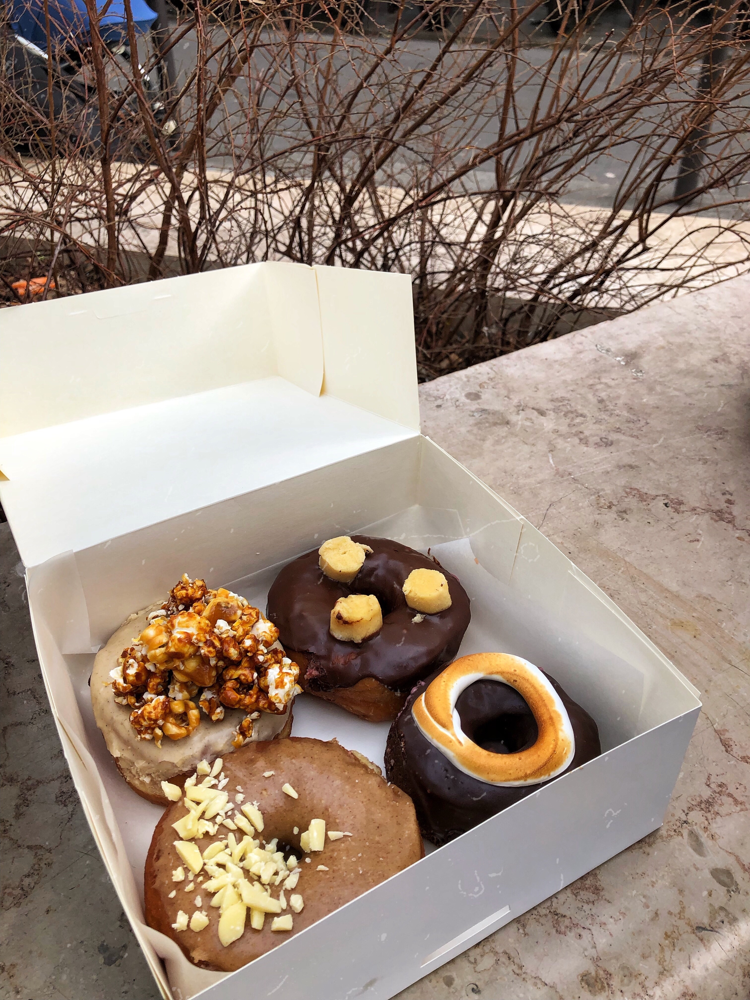
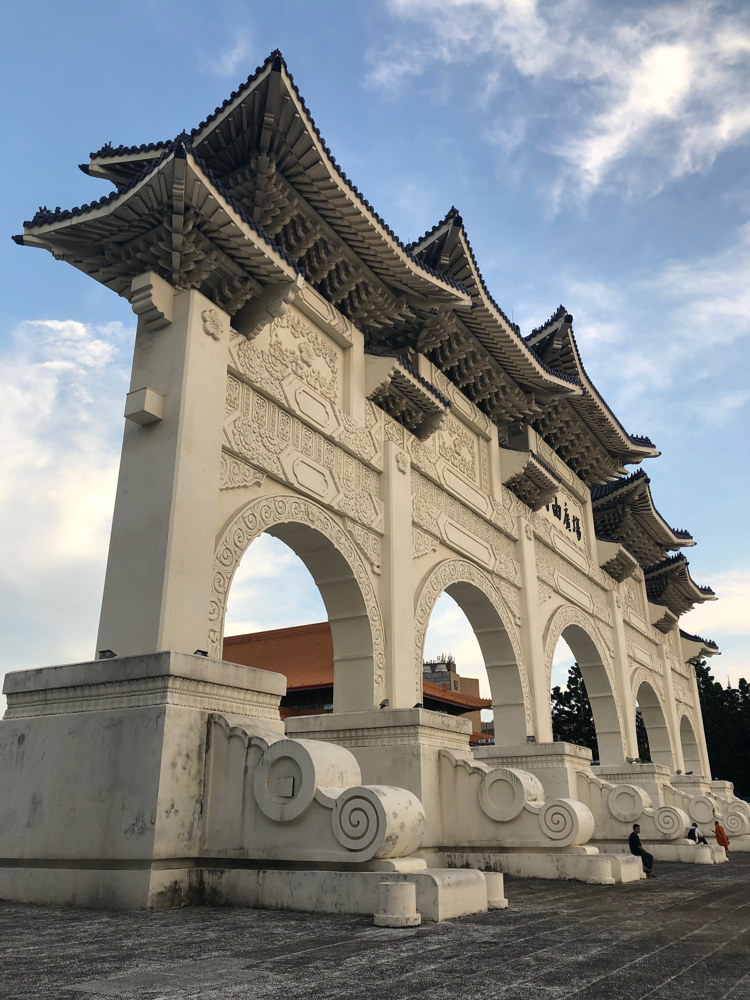
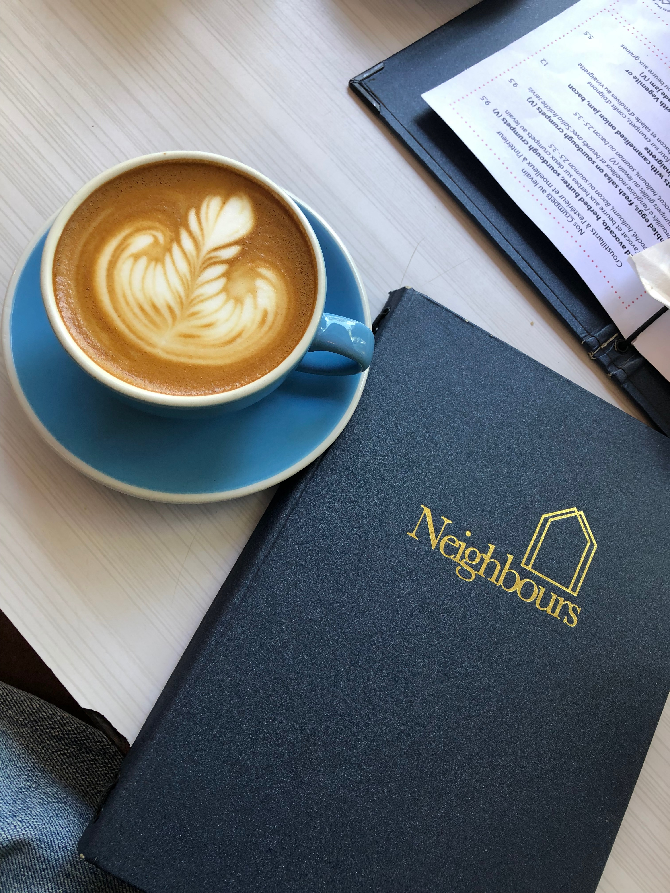

Et si on apprenait à se connaître?
Lauréanne Shiro

Chargée de communication digitale interne et marque employeur chez Dassault Systèmes
Qui suis-je ?
Hello ! je suis Lauréanne et si je vous parlais un peu de moi? Aujourd'hui étudiante en Master Marketing Digital & Innovationet tout juste diplômée d'une licence professionnelle E-commerce et marketing numérique à l'IUT Paris Descartes, je suis une grande adepte de photographie. J'ai décidé de développer mes compétences en digital et en UX pour un jour pouvoir devenir brand content manager et me charger de contrinbuer à l'image des marque dans le monde du digital. Vous pensez que c'est ambitieux? Vous avez bien raison!
Communication et réseaux sociaux 💻
J'aime être en charge des réseaux sociaux et de la visibilité des entreprises. Je suis toujours à l'affut des dernières tendances en communication
Mes Hobbies
Voyages✈️
Passionnée de voyages, je rêve un jour de pouvoir réalisée le tour du monde. Disons que j'ai déjà un peu commencé, et si on découvrait mes voyages ensemble !
- Angleterre - Londres
- Irlande-Dublin
- Japon-Tokyp
- Taïwan-Taïpei
- Thaïlande-Bangkok
- Canada-Montréal/Toronto
- États-Unis - NYC
- Singapour
- Italie-Rome
- Grêce-Athènes
Vous pensez que ça fait beaucoup ? - Découvrons ma prochaine destination
Où allons nous ensuite?Photographie & Food 📷
J'adore l'art de la photographie et plus précisément les photos portraits d'individus, food et payasages. Pour cela j'utilise un appareil reflex le Canon EOS 750D
Trouver mon appareil photoQuelques unes de mes photos
  
Mes Projets
Mon blog
Cela fait déjà 1 an que j'ai décidé de créer mon blog: Comme Laude
Le lien vers mon blog
Projet entrepreneurial
L'année dernière en groupe de 5 nous avons réalisé un projet tuteuré appelé Tattooink. une plateforme de mise en relation entre tatoueurs et particuliers